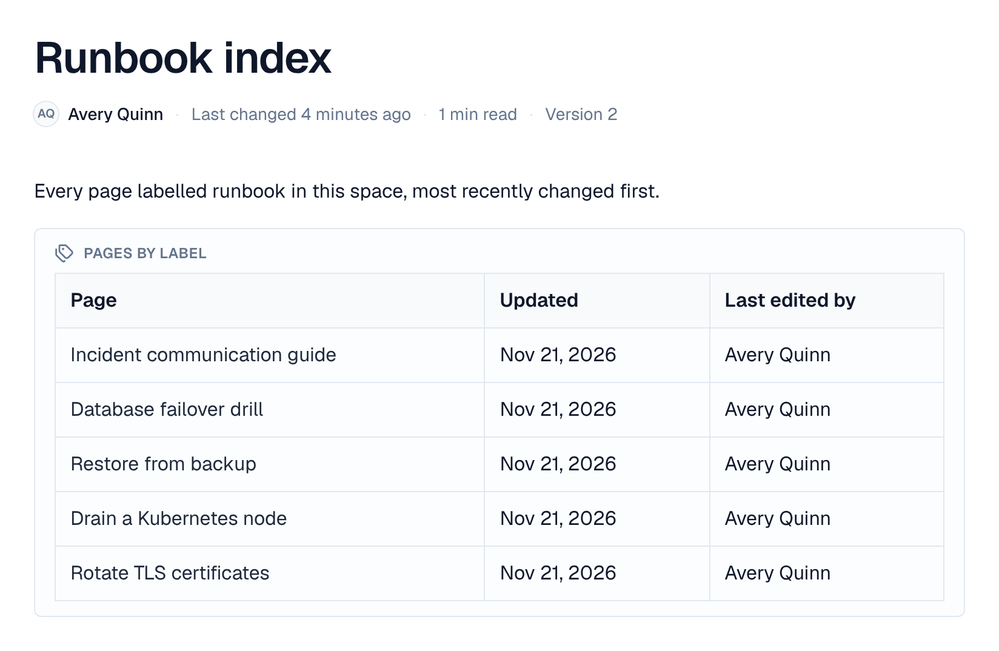
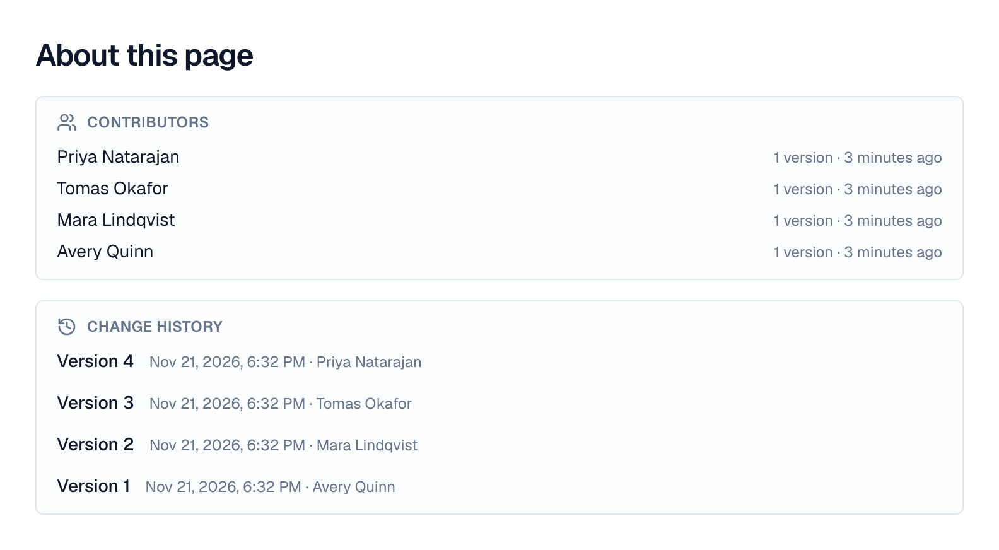

1. Overview
Four blocks list pages or facts about a page, worked out each time the page is shown, for the person reading it:
| Block | Lists | "/" menu |
|---|---|---|
| Pages by label | Published pages that carry some labels, in this space or others | /labels: opens its settings |
| Blog posts | The latest posts of this space's blog or of other blogs | /blog |
| Contributors | The people who published versions of this page | /contributors |
| Change history | This page's latest published versions | /history |
Blog posts, Contributors and Change history go in with their usual settings; select one and choose Block settings to change them.
Each reader sees only what they may read: pages in spaces they can't read, locked pages they aren't on, drafts and trashed pages never show. What you see in the editor may be more than a reader sees; Preview the page to check.
2. Pages by label
Lists the published pages that carry the labels you give, such as every runbook page across the teams' spaces.

| Setting | Choices |
|---|---|
| Labels | 1 to 5 labels, separated by commas |
| Pages must have | Any of the labels (the default) or All of the labels |
| From | This space, Every space the reader can read, or These spaces (up to 5 space keys, separated by commas) |
| Show as | List or Table (with the space when the list spans spaces, when each was updated and, for readers who may see people, who edited it last) |
| Sort by | Title, Last updated or Created, and Reverse the order |
| How many | 10, 25 (the default) or 50 |
| Include blog posts | List posts that carry the labels too |
3. Blog posts
Lists the newest published posts of a blog, with their date, authors and summary: for example the team's latest announcements at the top of its space's overview.
| Setting | Choices |
|---|---|
| From | This space, Every space the reader can read (blogs whose posts show on the company Blogs page) or These spaces |
| Labels (optional) | Only posts with any of these labels, up to 5 |
| Show as | Titles and excerpts (the default) or Titles only |
| How many | 3, 5 (the default) or 10 |
Only blogs that are on are listed. See Space blogs.
4. Contributors and change history

| Block | Settings |
|---|---|
| Contributors | Show as names (the default) or a list; How many: 5, 10 (the default) or 20; Show how many versions each published. People who published the most versions come first; authors of imported versions show with the name the import gave. |
| Change history | How many: 5 (the default), 10 or 20 versions, newest first, with the version number, date, who published it, its note and whether it was a minor change. |
People's names show only to readers who may see people in the space. Others read Contributors aren't shown to you in place of the contributors, and the change history without names. Visitors who aren't signed in are treated the same way.
5. Limits
- A page shows at most six lists that read other pages (Pages by label, Blog posts and Task report together); further ones say the page has too many blocks that show other pages.
- These blocks count toward the blocks that show other pages (Include page and the others).
- In a page downloaded as Word or PDF, each list prints as lines with their details, as you may see it; a table prints as lines too.
6. From Confluence
An import from Confluence turns Content by label and Content report table into Pages by label, Blog posts into Blog posts, Contributors about the page itself into Contributors and Change history into Change history. Filters the Wiki doesn't have (excluded labels, unknown spaces, authors) are dropped, so the list may show more; the import report counts them.